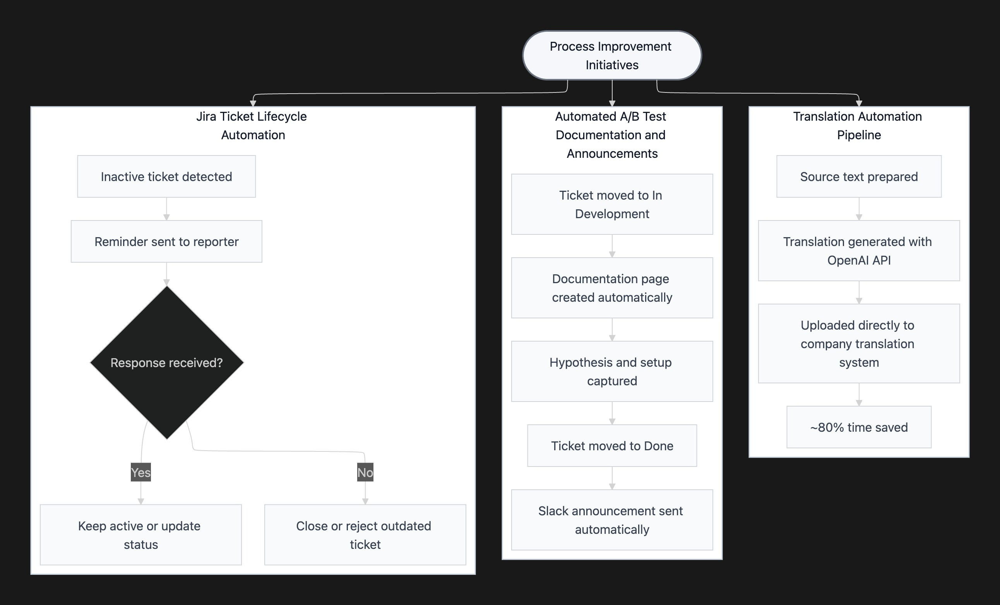

Context
At my previous company, product and engineering teams were spending too much time on operational work that should have been routine. Copy translation, experiment documentation, ticket cleanup, and internal support all relied on manual steps.
The problem was not just speed. The bigger issue was consistency. Each workflow was handled slightly differently, which made it harder to keep records clean and keep the team focused on actual product work.
My goal was to reduce operational overhead without making the workflows harder to use.
Choosing the right tool for the right users
I started by looking at who used each workflow and where the friction happened.
For example, the translation workflow involved PMs, engineers, and designers, so the solution could not depend on a tool that only one group understood. It had to fit into a shared workflow, keep information in the right place, and be easy to update when source text changed.
The same logic applied to experiment documentation and ticket handling. The goal was to remove repeated decisions, reduce copy-paste work, and make the process easier to follow for everyone involved.
This shaped the requirements: each automation had to be lightweight, maintainable, visible to the team, and connected to the tools people already used.

Four projects were delivered
Translation automation pipeline
I connected source text with OpenAI API and the translation system so multilingual copy could be generated and prepared faster. This reduced the manual back-and-forth between PMs, engineers, and localization work, and helped support faster multilingual releases.
Automated A/B test documentation and announcements
I set up Jira Automation to create structured Confluence documentation when an experiment moved into development, and to post Slack updates when the work was ready. This made experiment records more consistent and reduced repeated coordination during launch preparation.
Jira ticket lifecycle automation
I built a lightweight flow for stale tickets. Inactive tickets triggered reminders and could then be closed or marked for follow-up. This helped keep the board cleaner and made prioritization easier.
Self-service troubleshooting for internal requests
I created self-service documentation for common internal requests, so cross-functional team members could resolve frequent issues before escalating tickets. This reduced support work and made the process clearer for non-technical users.
Impact
- 80% time saved on translation work
- 70% of tickets resolved through self-service
- Reduced repeated coordination work for PMs, engineers, designers, and cross-functional teams
- Helped teams maintain cleaner product records and easier-to-prioritize Jira boards
Lessons learned
Product management is not only about building features for users. It also includes improving the internal systems that help teams move faster and stay organized.
This project taught me that small workflow problems become expensive when they repeat across teams. The best automation starts with understanding the users of the workflow, then choosing the simplest tool that removes friction without creating a new process people need to manage.
Reflection
This project showed me that product operations can create real leverage when it is treated like a product. The users were internal teams, the pain points were repeated manual steps, and the impact came from making everyday workflows clearer, faster, and easier to maintain.
The strongest lesson was that automation should quietly remove friction so teams can spend more time on product work that actually needs human judgment.